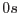

| NoOdfComponent | error | |
| odffix
could not find any dataset resembling an ODF component. | ||
| InvalidRevolutionIdentifier | error | |
| odffix
found a possible ODF dataset with a revolution identifier that is not a positive integer. Most likely the revolution identifier is an alphanumeric string. This is not compliant with the ODF Interface Control Document, and is known to cause problems in some parts of the SAS. | ||
| UnknowOdfFileType | error | |
| odffix
could not convert the name of the file to a known ODF file type. | ||
| InvalidFilterName | error | |
| odffix
Filter name found in the AUX files is not correct. | ||
| DefaultPointing | warning | |
| odffix
could find a wayt to extract the pointing information from the ODF.
corrective action: Use a default pointing. Use ra and dec to specify the pointing information. | ||
| MultipleODF | warning | |
| Files belonging to more than one ODF were found in
the directory.
corrective action: Ignore ODF components that belong to a different ODF. | ||
| missingAttribute | warning | |
| odffix
could not one attribute in
the dataset. Usually this is a DATE-XXX attribute.
corrective action: odffix ignores the problem and tries its best to find a correct date to assign to the ODF. The ODF components without valid DATE-XXX attributes are still listed in the ODF summary file. Thisis not a problem when using ODF components generated with scisim, as they always contain the appropriate date attributes. When using odffix on ``home brewn'' ODF components the user should check that the generated files make sense, i.e. they contain sensible DATE-OBS and DATE-END attributes. If this is not the case, the individual ODF components should be edited to contain DATE-OBS and DATE-END. | ||
| NegativeDuration | warning | |
| The observation duration appears to be less
than . Something may be wrong with the DATE-XXX attributes
read from the ODF constituents.
corrective action: Continue, but the resulting ODF summary file may be invalid. | ||
| DefaultDuration | warning | |
| No
meaningful DATE-XXX pair was found in any of the data sets.
This can cause odffix
to exit with an out of memory error, as
it tries to allocate an inordinate amount of memory for the time
correlation file. To prevent this from happening, when sucha
condition is detected the duration of the observation is hardcoded
to be 3600 s.
corrective action: Continue. The observation start date is set to now, and the observation duration is set to 3600 s. | ||
| LongObservation | warning | |
| The calculated observation duration is
excessively long (value indicated). This may indicate a problem with
the DATE-XXX attributes from the ODF components, and also leads to
the generation of very large files by odffix.
corrective action: None. | ||
| AttitudeHistoryFileExists | warning | |
| odffix
has detected a pre-existing
attitude history file.
corrective action: Because the pre-existing file could have been generated by scisim, a new attitude history file will not be created. | ||
| OMTrackingHistoryDataFileExists | warning | |
| odffix
has detected a pre-existing OM
tracking history data file.
corrective action: Because the pre-existing file could have been generated by the SOC PMS system, a new file will not be created. | ||
| OMPriorityWindowDataFileExists | warning | |
| odffix
has detected a pre-existing OM
priority window data file.
corrective action: Because the pre-existing file could have been generated by the SOC PMS system, a new file will not be created. | ||
| invalidDateString | warning | |
| A dataset contains a date
string that cannot be interpreted.
corrective action: The dataset is not used to calculate the observation duration and start/stop time. | ||